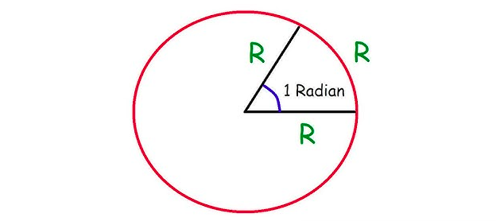
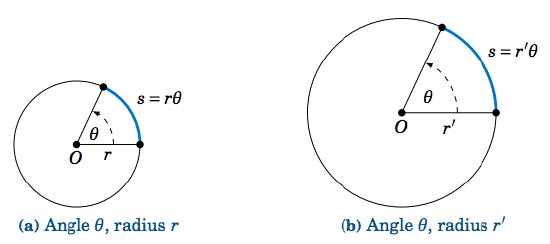
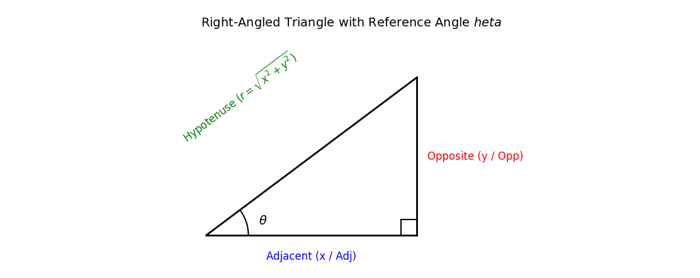

HIGHER MATHEMATICS
Lecture 02
1st Paper
Chapter 6.1, 6.2
Angle conversion (D to R, R to D), Arc distance, Sector of a circle, Trigonometric ratios and formulas, Limitations of ratios
Monday, August 17, 2026
Angle Concepts & Systems of Measurement
Angle
An angle is formed by the rotation of a ray about a fixed point (called the vertex) from an initial position (initial side) to a terminal position (terminal side).
Two Types of Angles: Geometric and Trigonometric
- Geometric Angle: Formed by the union of two static non-collinear rays meeting at a common endpoint.
- Trigonometric Angle: Formed by the dynamic rotation of a single ray about a fixed point from an initial vector to a terminal vector.
Differences Between Geometric and Trigonometric Angles
| Feature | Geometric Angle | Trigonometric Angle |
|---|---|---|
| Magnitude Range | Restricted to \(0^\circ \le \theta \le 360^\circ\). | Unbounded: \(-\infty < \theta < \infty\). |
| Sign / Direction | Always non-negative (direction is irrelevant). | Signed: Anti-clockwise rotation is positive (\(+\)); Clockwise rotation is negative (\(-\)). |
| Multiple Rotations | Cannot exceed \(360^\circ\) (one full rotation). | Accounts for multiple full revolutions (e.g., \(750^\circ = 2 \times 360^\circ + 30^\circ\)). |
Angle Systems of Unit Measurement
1. Sexagesimal System (English System)
In this system, a right angle is divided into \(90\) equal parts called degrees (\(^\circ\)).
- \(1 \text{ Right Angle} = 90^\circ\) (Degrees)
- \(1^\circ = 60'\) (Minutes of arc)
- \(1' = 60''\) (Seconds of arc)
2. Circular System (Radian System)
The standard SI unit for angular measure in pure mathematics.
- Definition of Radian (\(1^c\) or \(1 \text{ rad}\)): One radian is the measure of an angle subtended at the center of a circle by an arc whose length is equal to the radius of the circle.

3. Centesimal System (French System)
A metric-aligned system where a right angle is divided into \(100\) equal parts called grades or gradians (\(\text{gon}\) or \(^\text{g}\)).
- Definition: \(1 \text{ Grade}\) (\(1^\text{g}\)) is \(\frac{1}{100}\text{th}\) of a right angle.
- \(1 \text{ Right Angle} = 100^\text{g}\) (Grades)
- \(1^\text{g} = 100^\text{c}\) (Centesimal Minutes)
- \(1^\text{c} = 100^\text{cc}\) (Centesimal Seconds)
Conversion Between Units
Since \(1 \text{ Right Angle} = 90^\circ = 100^\text{g} = \frac{\pi}{2} \text{ radians}\):
\[\pi \text{ radians} = 180^\circ = 200^\text{g}\]
Fundamental Conversion Formulas
\[1^\circ = \frac{\pi}{180} \text{ rad} \approx 0.017453 \text{ rad}\] \[1 \text{ rad} = \left(\frac{180}{\pi}\right)^\circ \approx 57^\circ 17' 45''\]
Conversions
Degree-Minute-Second (DMS) to Radians: Convert minutes and seconds to decimal degrees first: \[\theta^\circ = D + \frac{M}{60} + \frac{S}{3600}\] \[\theta \text{ (rad)} = \theta^\circ \times \frac{\pi}{180}\]
Radians to Degree-Minute-Second: Multiply by \(\frac{180}{\pi}\) to get decimal degrees, then convert fractional parts to minutes (\(\times 60\)) and seconds (\(\times 60\)).
Circular Geometry: Arcs & Sectors
Arc Distance Formula (\(s = r\theta\))

Let a circle have radius \(r\). An arc of length \(s\) subtends an angle \(\theta\) in radians at the center.
\[\theta = \frac{\text{Arc Length}}{\text{Radius}} = \frac{s}{r} \implies s = r\theta \quad (\theta \text{ MUST be in radians})\]
Area of a Circular Sector
Derivation
The area of a full circle (\(\pi r^2\)) corresponds to a central angle of \(2\pi\) radians. By linear proportion:
\[\frac{\text{Area of Sector}}{\text{Area of Circle}} = \frac{\text{Central Angle}}{2\pi}\]
\[\frac{A}{\pi r^2} = \frac{\theta}{2\pi} \implies A = \frac{1}{2} r^2 \theta\]
Using \(s = r\theta\), this can also be expressed as: \[A = \frac{1}{2} r s\]
Trigonometric Ratios & Core Identities
For an acute angle \(\theta\) in a right-angled triangle with Opp (opposite), Adj (adjacent), and Hyp (hypotenuse):

Definitions & Reciprocal Relations
\[\sin\theta = \frac{\text{Opp}}{\text{Hyp}} = \frac{y}{r}, \quad \csc\theta = \frac{1}{\sin\theta} = \frac{r}{y}\] \[\cos\theta = \frac{\text{Adj}}{\text{Hyp}} = \frac{x}{r}, \quad \sec\theta = \frac{1}{\cos\theta} = \frac{r}{x}\] \[\tan\theta = \frac{\text{Opp}}{\text{Adj}} = \frac{y}{x}, \quad \cot\theta = \frac{1}{\tan\theta} = \frac{x}{y}\]
Quotient Identities
\[\tan\theta = \frac{\sin\theta}{\cos\theta}, \quad \cot\theta = \frac{\cos\theta}{\sin\theta}\]
Pythagorean Identities
\[\sin^2\theta + \cos^2\theta = 1\] \[1 + \tan^2\theta = \sec^2\theta \implies \sec^2\theta - \tan^2\theta = 1\] \[1 + \cot^2\theta = \csc^2\theta \implies \csc^2\theta - \cot^2\theta = 1\]
Table of Standard Angle Values
| \(\theta\) (Deg) | \(\theta\) (Rad) | \(\sin\theta\) | \(\cos\theta\) | \(\tan\theta\) | \(\csc\theta\) | \(\sec\theta\) | \(\cot\theta\) |
|---|---|---|---|---|---|---|---|
| \(0^\circ\) | \(0\) | \(0\) | \(1\) | \(0\) | Undefined | \(1\) | Undefined |
| \(30^\circ\) | \(\frac{\pi}{6}\) | \(\frac{1}{2}\) | \(\frac{\sqrt{3}}{2}\) | \(\frac{1}{\sqrt{3}}\) | \(2\) | \(\frac{2}{\sqrt{3}}\) | \(\sqrt{3}\) |
| \(45^\circ\) | \(\frac{\pi}{4}\) | \(\frac{1}{\sqrt{2}}\) | \(\frac{1}{\sqrt{2}}\) | \(1\) | \(\sqrt{2}\) | \(\sqrt{2}\) | \(1\) |
| \(60^\circ\) | \(\frac{\pi}{3}\) | \(\frac{\sqrt{3}}{2}\) | \(\frac{1}{2}\) | \(\sqrt{3}\) | \(\frac{2}{\sqrt{3}}\) | \(2\) | \(\frac{1}{\sqrt{3}}\) |
| \(90^\circ\) | \(\frac{\pi}{2}\) | \(1\) | \(0\) | Undefined | \(1\) | Undefined | \(0\) |
Type-Wise Problems with Solutions
Type 1: Angle Unit Conversion
Problem 1.1 (Standard): Convert \(36^\circ 15' 27''\) into radians.
Solution:
\[15' = \left(\frac{15}{60}\right)^\circ = 0.25^\circ\] \[27'' = \left(\frac{27}{3600}\right)^\circ = 0.0075^\circ\] \[\theta^\circ = 36^\circ + 0.25^\circ + 0.0075^\circ = 36.2575^\circ\] \[\theta \text{ (rad)} = 36.2575 \times \frac{\pi}{180} = \frac{36.2575 \pi}{180} \approx 0.6328 \text{ rad}\]
Problem 1.2 (Advanced - University Style): Express an angle of \(\frac{7\pi}{16} \text{ rad}\) in Sexagesimal (\(^\circ \, ' \, ''\)) and Centesimal (\(\text{gon}\)) systems.
Solution:
1. Sexagesimal: \[\theta = \frac{7\pi}{16} \times \frac{180^\circ}{\pi} = \frac{1260^\circ}{16} = 78.75^\circ\] \[0.75^\circ = (0.75 \times 60)' = 45'\] \[\therefore \theta = 78^\circ 45' 00''\]
- Centesimal: \[\theta = \frac{7\pi}{16} \times \frac{200^\text{g}}{\pi} = \frac{1400^\text{g}}{16} = 87.5^\text{g} = 87^\text{g} \, 50^\text{c}\]
Type 2: \(s = r\theta\) Applications
Problem 2.1 (Practical): A circular track has a radius of \(200\text{ m}\). A runner covers an arc length of \(150\text{ m}\). Find the central angle in degrees.
Solution:
\[s = 150\text{ m}, \quad r = 200\text{ m}\] \[\theta = \frac{s}{r} = \frac{150}{200} = 0.75 \text{ radians}\] \[\theta^\circ = 0.75 \times \frac{180^\circ}{\pi} \approx 42.97^\circ = 42^\circ 58' 12''\]
Problem 2.2 (Practical): The radius of the Earth is \(6400\text{ km}\). Find the distance between two places on the equator that subtend an angle of \(1^\circ 30'\) at the center.
Solution:
\[\theta = 1^\circ 30' = 1.5^\circ = 1.5 \times \frac{\pi}{180} = \frac{\pi}{120} \text{ rad}\] \[s = r\theta = 6400 \times \frac{\pi}{120} = \frac{160\pi}{3} \approx 167.55\text{ km}\]
Problem 2.3 (Conceptual - Olympiad / Competition Style): Two concentric circles have radii \(r_1\) and \(r_2\) (\(r_2 > r_1\)). A line segment tangent to the inner circle forms a chord of length \(2L\) in the outer circle. Derive the area of the annular region between the two circles using circular sector integration concepts.
Solution:
Let the tangent point on the inner circle be \(P\), forming a right triangle with the center \(O\) and an endpoint of the chord \(Q\).
In \(\triangle OPQ\), \(OP = r_1\), \(OQ = r_2\), and \(PQ = L\).
By Pythagorean theorem: \(r_2^2 - r_1^2 = L^2\).
The area of the region (annulus) is: \[\text{Area} = \pi r_2^2 - \pi r_1^2 = \pi(r_2^2 - r_1^2) = \pi L^2\]
Type 3: Clock Hand Angles
General Shortcut Formula
The acute angle \(\theta\) between the hour hand and minute hand at \(H\) hours and \(M\) minutes is:
\[\theta = \left| 30H - \frac{11}{2}M \right|^\circ\]
(If \(\theta > 180^\circ\), the smaller angle is \(360^\circ - \theta\).)
Problem 3.1: Find the angle between the hands of a clock at \(8:20\).
Solution:
Here \(H = 8\), \(M = 20\). \[\theta = \left| 30(8) - \frac{11}{2}(20) \right| = |240 - 110| = 130^\circ\] \[\text{In Radians: } 130 \times \frac{\pi}{180} = \frac{13\pi}{18} \text{ rad}\]
Problem 3.2: At what time between \(3\) o’clock and \(4\) o’clock will the hands of a clock coincide?
Solution:
Hands coincide when \(\theta = 0^\circ\). Set \(H = 3\): \[\left| 30(3) - \frac{11}{2}M \right| = 0 \implies 90 = \frac{11}{2}M \implies M = \frac{180}{11} = 16 \frac{4}{11} \text{ minutes}\] The hands coincide at \(3\text{ hours } 16 \frac{4}{11}\text{ minutes}\).
Type 4: Wheel Revolutions
Problem 4.1: The wheel of a car has a diameter of \(84\text{ cm}\). How many revolutions per minute (RPM) must it make to maintain a speed of \(66\text{ km/h}\)?
Solution:
1. Radius (\(r\)): \(\frac{84}{2} = 42\text{ cm} = 0.42\text{ m}\).
2. Circumference (\(C\)): \(2\pi r = 2 \pi (0.42) = 0.84\pi\text{ m}\).
3. Speed in m/min:
\[v = \frac{66 \times 1000\text{ m}}{60\text{ min}} = 1100\text{ m/min}\] 4. Revolutions per minute:
\[N = \frac{\text{Distance per minute}}{\text{Circumference}} = \frac{1100}{0.84\pi} = \frac{1100}{0.84 \times \frac{22}{7}} = \frac{1100}{2.64} = 416.67\text{ rev/min}\]
Type 5: Classic & Competition Proofs
Problem 5.1: If \(\tan\alpha + \sec\alpha = x\), show that \(\sin\alpha = \frac{x^2 - 1}{x^2 + 1}\).
Proof:
Given \(\sec\alpha + \tan\alpha = x\).
We know the identity \(\sec^2\alpha - \tan^2\alpha = 1 \implies (\sec\alpha - \tan\alpha)(\sec\alpha + \tan\alpha) = 1\).
\[\implies \sec\alpha - \tan\alpha = \frac{1}{x}\]
Adding the two equations: \[2\sec\alpha = x + \frac{1}{x} = \frac{x^2 + 1}{x} \implies \sec\alpha = \frac{x^2 + 1}{2x} \implies \cos\alpha = \frac{2x}{x^2 + 1}\]
Subtracting the two equations: \[2\tan\alpha = x - \frac{1}{x} = \frac{x^2 - 1}{x} \implies \tan\alpha = \frac{x^2 - 1}{2x}\]
Since \(\sin\alpha = \tan\alpha \cdot \cos\alpha\): \[\sin\alpha = \left(\frac{x^2 - 1}{2x}\right) \cdot \left(\frac{2x}{x^2 + 1}\right) = \frac{x^2 - 1}{x^2 + 1} \quad \blacksquare\]
Problem 5.2: If \(\sin A + \sin^2 A = 1\), prove that \(\cos^2 A + \cos^4 A = 1\).
Proof:
Given \(\sin A = 1 - \sin^2 A\).
Using \(\sin^2 A + \cos^2 A = 1 \implies 1 - \sin^2 A = \cos^2 A\).
\[\therefore \sin A = \cos^2 A\]
Squaring both sides: \[\sin^2 A = \cos^4 A\]
Substitute \(\sin^2 A = 1 - \cos^2 A\): \[1 - \cos^2 A = \cos^4 A \implies \cos^2 A + \cos^4 A = 1 \quad \blacksquare\]
Problem 5.3: Prove that \(\frac{\cos A}{1 - \tan A} + \frac{\sin A}{1 - \cot A} = \sin A + \cos A\).
Proof:
\[\text{LHS} = \frac{\cos A}{1 - \frac{\sin A}{\cos A}} + \frac{\sin A}{1 - \frac{\cos A}{\sin A}} = \frac{\cos^2 A}{\cos A - \sin A} + \frac{\sin^2 A}{\sin A - \cos A}\] \[\text{LHS} = \frac{\cos^2 A}{\cos A - \sin A} - \frac{\sin^2 A}{\cos A - \sin A} = \frac{\cos^2 A - \sin^2 A}{\cos A - \sin A}\] \[\text{LHS} = \frac{(\cos A - \sin A)(\cos A + \sin A)}{\cos A - \sin A} = \cos A + \sin A = \text{RHS} \quad \blacksquare\]
Problem 5.4: Prove that \(\sqrt{\frac{1 + \sin\theta}{1 - \sin\theta}} = \sec\theta + \tan\theta\).
Proof:
Multiply numerator and denominator under the root by \((1 + \sin\theta)\): \[\text{LHS} = \sqrt{\frac{(1 + \sin\theta)^2}{(1 - \sin\theta)(1 + \sin\theta)}} = \sqrt{\frac{(1 + \sin\theta)^2}{1 - \sin^2\theta}} = \sqrt{\frac{(1 + \sin\theta)^2}{\cos^2\theta}}\] \[\text{LHS} = \frac{1 + \sin\theta}{\cos\theta} = \frac{1}{\cos\theta} + \frac{\sin\theta}{\cos\theta} = \sec\theta + \tan\theta = \text{RHS} \quad \blacksquare\]
Problem 5.5: If \(a \cos\theta + b \sin\theta = c\), prove that \(a \sin\theta - b \cos\theta = \pm \sqrt{a^2 + b^2 - c^2}\).
Proof:
Let \(a \sin\theta - b \cos\theta = x\).
Square both equations and add them: \[(a \cos\theta + b \sin\theta)^2 + (a \sin\theta - b \cos\theta)^2 = c^2 + x^2\] \[a^2 \cos^2\theta + b^2 \sin^2\theta + 2ab\cos\theta\sin\theta + a^2 \sin^2\theta + b^2 \cos^2\theta - 2ab\sin\theta\cos\theta = c^2 + x^2\] \[a^2(\cos^2\theta + \sin^2\theta) + b^2(\sin^2\theta + \cos^2\theta) = c^2 + x^2\] \[a^2(1) + b^2(1) = c^2 + x^2 \implies x^2 = a^2 + b^2 - c^2\] \[x = \pm \sqrt{a^2 + b^2 - c^2} \quad \blacksquare\]
Problem 5.6: Eliminate \(\theta\) from \(x = a \sec\theta\) and \(y = b \tan\theta\).
Proof:
From the given equations: \[\sec\theta = \frac{x}{a}, \quad \tan\theta = \frac{y}{b}\]
Using the identity \(\sec^2\theta - \tan^2\theta = 1\): \[\left(\frac{x}{a}\right)^2 - \left(\frac{y}{b}\right)^2 = 1 \implies \frac{x^2}{a^2} - \frac{y^2}{b^2} = 1 \quad \blacksquare\]
Problem 5.7: Prove that \((1 + \cot\theta - \csc\theta)(1 + \tan\theta + \sec\theta) = 2\).
Proof:
Convert all ratios to sine and cosine: \[\text{LHS} = \left(1 + \frac{\cos\theta}{\sin\theta} - \frac{1}{\sin\theta}\right) \left(1 + \frac{\sin\theta}{\cos\theta} + \frac{1}{\cos\theta}\right)\] \[\text{LHS} = \left(\frac{\sin\theta + \cos\theta - 1}{\sin\theta}\right) \left(\frac{\cos\theta + \sin\theta + 1}{\cos\theta}\right)\] \[\text{LHS} = \frac{[(\sin\theta + \cos\theta) - 1][(\sin\theta + \cos\theta) + 1]}{\sin\theta \cos\theta} = \frac{(\sin\theta + \cos\theta)^2 - 1^2}{\sin\theta \cos\theta}\] \[\text{LHS} = \frac{\sin^2\theta + \cos^2\theta + 2\sin\theta\cos\theta - 1}{\sin\theta \cos\theta} = \frac{1 + 2\sin\theta\cos\theta - 1}{\sin\theta \cos\theta} = \frac{2\sin\theta\cos\theta}{\sin\theta\cos\theta} = 2 \quad \blacksquare\]
Problem 5.8: If \(\sec\theta - \tan\theta = \frac{1}{3}\), find the value of \(\sec\theta + \tan\theta\) and \(\sin\theta\).
Proof/Solution:
Since \(\sec^2\theta - \tan^2\theta = 1 \implies (\sec\theta - \tan\theta)(\sec\theta + \tan\theta) = 1\): \[\sec\theta + \tan\theta = \frac{1}{\sec\theta - \tan\theta} = \frac{1}{1/3} = 3\]
Adding \(\sec\theta - \tan\theta = \frac{1}{3}\) and \(\sec\theta + \tan\theta = 3\): \[2\sec\theta = \frac{10}{3} \implies \sec\theta = \frac{5}{3} \implies \cos\theta = \frac{3}{5}\]
Subtracting equations: \[2\tan\theta = 3 - \frac{1}{3} = \frac{8}{3} \implies \tan\theta = \frac{4}{3}\] \[\sin\theta = \tan\theta \cdot \cos\theta = \frac{4}{3} \cdot \frac{3}{5} = \frac{4}{5} \quad \blacksquare\]
Problem 5.9: Prove that \(\frac{\tan A + \sec A - 1}{\tan A - \sec A + 1} = \frac{1 + \sin A}{\cos A}\).
Proof:
Replace \(1\) in the numerator with \((\sec^2 A - \tan^2 A)\): \[\text{LHS} = \frac{(\tan A + \sec A) - (\sec^2 A - \tan^2 A)}{\tan A - \sec A + 1}\] \[\text{LHS} = \frac{(\tan A + \sec A) - (\sec A - \tan A)(\sec A + \tan A)}{\tan A - \sec A + 1}\] \[\text{LHS} = \frac{(\sec A + \tan A)[1 - (\sec A - \tan A)]}{\tan A - \sec A + 1} = \frac{(\sec A + \tan A)(1 - \sec A + \tan A)}{\tan A - \sec A + 1}\] \[\text{LHS} = \sec A + \tan A = \frac{1}{\cos A} + \frac{\sin A}{\cos A} = \frac{1 + \sin A}{\cos A} = \text{RHS} \quad \blacksquare\]
Problem 5.10: Prove that \(\sin^6\theta + \cos^6\theta = 1 - 3\sin^2\theta\cos^2\theta\).
Proof:
Using the identity \(a^3 + b^3 = (a + b)^3 - 3ab(a + b)\): \[\text{LHS} = (\sin^2\theta)^3 + (\cos^2\theta)^3\] \[\text{LHS} = (\sin^2\theta + \cos^2\theta)^3 - 3\sin^2\theta\cos^2\theta(\sin^2\theta + \cos^2\theta)\] Since \(\sin^2\theta + \cos^2\theta = 1\): \[\text{LHS} = (1)^3 - 3\sin^2\theta\cos^2\theta(1) = 1 - 3\sin^2\theta\cos^2\theta = \text{RHS} \quad \blacksquare\]
Shortcut Techniques
Technique 1
An \(n\)-sided regular polygon has:
- Exterior angle: \(\frac{360}{n}^\circ\)
- Interior angle: \(\left(180 - \frac{360}{n}\right)^\circ\)
Technique 2
Angle between hour hand and minute hand of a clock is
\[ \theta = \left\lvert \frac{60H - 11M}{2} \right\rvert \] Here, H = Hour value of a clock, M = Minute value of a clock
Practice Problems
Question 1
BUET 17-18 Combined Board 2018
If \(\cos\alpha + \sec\alpha = \frac{5}{2}\), then prove that, \(\cos^n\alpha + \sec^n\alpha = 2^n + 2^{-n}\)
Question 2
If \(\csc A + \csc B + \csc C = 0\), then prove that, \((\sum\sin A)^2 = \sum\sin^2A\).